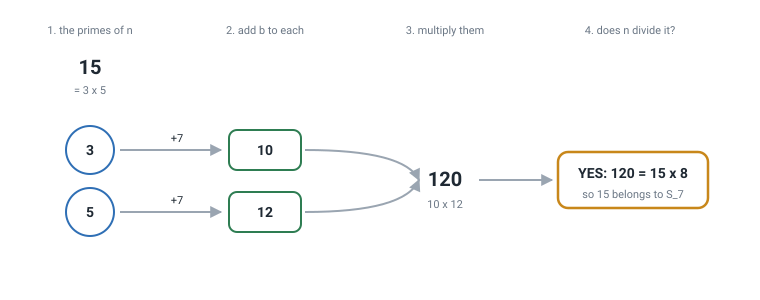
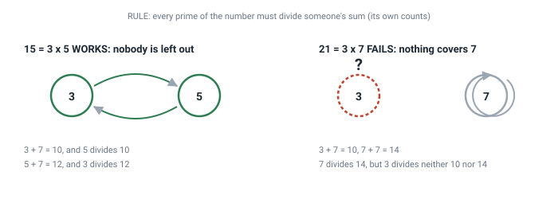
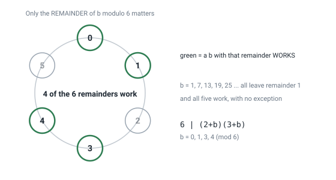
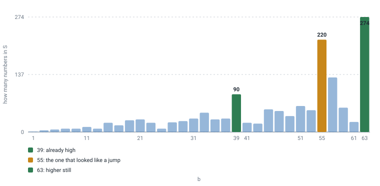

Explained from scratch · no background needed
What the sets Sb are, where the data came from, how it was checked, and what it is good for. If you can divide and you remember what a prime number is, that is enough.
Every whole number is built out of primes, the way a recipe is built out of ingredients. 15 is built from 3 and 5. 21, from 3 and 7. 30, from 2, 3 and 5.
Imagine each ingredient contributes something to the dish. We ask every prime
to contribute itself plus a fixed number, which we will call
b. If b is 7, then the prime 3 contributes
3 + 7 = 10, and the prime 5 contributes 5 + 7 = 12.
Then we multiply everything they contributed: 10 × 12 = 120.
And here is the question, which is a single one:
Does the original number fit exactly into what its own primes contributed? That is: can 120 be divided by 15 with nothing left over?
It can: 120 ÷ 15 = 8, exactly, nothing left over. When that
happens we say the number gets along with its primes, and we drop it into
a bag called S7 — the bag of numbers that work when
b is 7.
21 does not manage it. Its primes are 3 and 7; they contribute
3+7 = 10 and 7+7 = 14; the product is
10 × 14 = 140; and 140 ÷ 21 is 6 with 14 left over.
It does not fit. 21 stays out of the bag.
That is the whole object of study. Change b and you change the
bag: there is one bag per b. And the question this work answers is
how many numbers are in each bag, and why.
These five, and no more. Each with a small example.
12 ÷ 3 comes out exact, no remainder.
Written 3 | 12. By contrast 5 does not divide 12, because
2 is left over.30 = 2 × 3 × 5. Every number breaks up this way in exactly one
way, and that is the single most important fact in all of arithmetic.17 ÷ 5 is 3 with 2 left
over: the remainder is 2. Written 17 ≡ 2 (mod 5). It is the idea
of a clock: three hours after 23:00 it is 02:00.Four steps, always the same.

n = 15 and
b = 7. Factor, add b to each prime, multiply
everything, and ask whether the original number divides the result. Here it
does: 120 = 15 × 8.There is a handier way to look at it, and it is the one we use for everything that follows. Instead of multiplying everything and then dividing, you can check prime by prime:
The equivalent rule: every prime of the number must divide the contribution of some prime of the number — someone else's, or its own.
With 15 and b = 7: 3 divides 5 + 7 = 12 ✓, and 5
divides 3 + 7 = 10 ✓. Both are covered, so 15 is in. We say they
cover each other.

7+7=14) but nothing covers 3, and one prime left out is
already enough for the number to fail.Take b = 3 and check whether 10 goes in the bag.
Hint: 10 = 2 × 5. Add 3 to each prime. Multiply. Divide by
10.
Answer: 2+3 = 5 and 5+3 = 8;
5 × 8 = 40; 40 ÷ 10 = 4, exact. 10 is in.
And with the covering rule: 5 covers 2 (because 2 divides 8) and 2 covers 5
(because 5 divides 5).
If you got that, you already understand the whole object. Everything that
follows is counting: how many numbers like 10 there are for each
b.
This is the part that almost never gets told, and it is the part that makes the rest believable. Nobody gave an opinion here: everything claimed came out of a program, and the program is published.
b, finds all the
numbers in the bag. Not some of them: all, with no upper limit. That is
possible because one of the findings proves the list ends (section 6).b from 1 to 2001.A bag could in principle hold infinitely many numbers. It does not. One can
prove that no prime of any number in the bag can exceed
b + 2.
The reason fits in three lines. If a large prime p divides
q + b, and q is smaller than p, then
q + b is smaller than 2p, so q + b must
be exactly p. But now: if b is odd and
q is odd too, the sum is even, and no large prime is even. So
q can only be 2, and then p = b + 2. One single
possibility, and we know which.
This argument, for the case b = 1, was already known:
it is the classical proof that 6 is the only squarefree number dividing the
sum of its own divisors. We did not invent it and the work says so. What we
did not find published is the whole family, for arbitrary b.
This is the finding that organizes everything else. To know whether a number
is in the bag of b, you do not need b itself: only
its remainder.
For 6, for instance, the remainders that work are 0, 1, 3 and 4. So 6 is in
for b = 1, and also for 7, 13, 19, 25, 31… every value leaving
remainder 1 when divided by 6. No exceptions, and no need to test them.

b leaves one of those six remainders, this
clock settles the case for all values of b, which are
infinitely many.And there is a formula giving, for any number, how many clock positions work: multiply, prime by prime, the number of distinct remainders left by its own primes. For 210 that gives 72 positions out of 210. It was checked against the definition for every squarefree number up to 1000, without a single discrepancy.
If the number has exactly two primes, the condition closes into a very simple
sum. When neither of the two divides b, it turns out that
(p − 1) × (q − 1) must equal b + 1.
So instead of testing primes one by one, you factor a single number and every answer falls out at once. It is the difference between finding a key by trying every lock and reading the number stamped on the key.
This result started from a mistake of our own, and it is worth telling because it is the most instructive part.
The bag sizes were known for b = 1, 3, 5, 7, 9 and 11 — they
gave 1, 4, 6, 8, 8 and 12 — and also for b = 55, which gave
220. It looked like a jump: from 12 to
220. And for a while we looked for what caused it.
Nothing caused it, because the jump did not exist: nobody had computed the
values in between. Once computed, b = 39 already gave
90 and b = 63 gave
274, more than 55 did.

b up to
63. The bar at 55 stood out only because the ones beside it had never been
drawn.A jump in the data can be a discovery, or it can be a hole in what you looked at. Before explaining an oddity, it is worth checking whether the oddity belongs to the world or to the sampling.
That also answered the original question: there is no formula for the
bag size as a function of b, and now we know why. The clock in (b)
shows that membership mixes the remainder of b with the entire
structure of the number, and that mixture does not compress. One example says
it: b = 61 gives 24 and b = 63 gives 274, and they are
neighbours.
Because anyone can run one command and watch. The repository ships a program running 35 checks in about four seconds, with nothing to install.
Three of those checks deserve explaining, because they are what separates verifiable work from an assertion:
Honestly: this cures nothing and will not speed up your phone. It is elementary mathematics, and its usefulness is that of most elementary mathematics — considerable, but indirect:
Honest work marks its own edges. These are ours:
| It does not say | Why |
|---|---|
That the case b = 1 is new |
It is classical, and the proof is the usual one. The work states this. |
| That nobody knew any of this before | We searched OEIS, four bibliographic databases, Zenodo, DataCite and the web, and we wrote down exactly what we searched for. Not finding something is not the same as proving it does not exist. |
Anything about even b |
There the bag may be infinite, and deciding it runs into an open problem. Not touched. |
| A formula for the size | We show there is none in the elementary sense, and explain why. That is different from having one. |
| How the table continues past 2001 | That is how far it was computed. What was not computed is not claimed. |
| Word | What it means | Example |
|---|---|---|
| Prime | Only 1 and itself divide it | 2, 3, 5, 7, 11 |
| Divides | The division comes out exact | 3 | 12 |
| Factoring | Breaking into a product of primes | 30 = 2×3×5 |
| Squarefree | No prime repeats | 30 yes, 12 no |
| Remainder (mod) | What is left after dividing | 17 ≡ 2 (mod 5) |
| Radical | The product of the distinct primes | rad(12) = 6 |
| σ(n) | The sum of all divisors | σ(6) = 1+2+3+6 = 12 |
| φ(n) | How many smaller numbers share no factor | φ(6) = 2 |
| Sb | The bag studied here | 15 ∈ S₇ |
PRIOR_ART.md lists what was searched and where.